Background & Overview
Motivation
The need for real-time, low-cost, and private microtransactions.
As autonomous agents increasingly populate digital ecosystems—from decentralized AI marketplaces to on-chain data networks—the ability to transact seamlessly, securely, and privately at scale has become essential. AI agents acting as data providers, model trainers, inference engines, or composite service brokers must exchange value continuously for computation, data, or services. These interactions often take the form of real-time, high-frequency microtransactions that traditional blockchain systems cannot handle efficiently or privately.
Public blockchains provide a base layer of trust and global verifiability but are fundamentally constrained by their design: every transaction must be broadcast, validated, and stored by the entire network. This results in high fees, multi-second latency, and full transparency of payment information. For competitive AI agents, such visibility exposes sensitive information—like pricing models, data valuations, or cooperative relationships—that should remain confidential.
State channels offer a natural complement: peers exchange signed state updates entirely off-chain and touch the blockchain only as a final arbiter for settlement or disputes — delivering instant, near-zero-cost, and privacy-preserving payments without sacrificing on-chain enforceability. This is the missing primitive for the emerging machine-to-machine economy.
Celer AgentPay
Celer AgentPay brings state channels to the AI agent economy, extending Celer’s production-grade technology into a real-time, private, and programmable payment backbone at Internet scale. Built on a generalized off-chain state-channel framework, AgentPay allows agents to transact in milliseconds for model inference, data streaming, or compute-for-token exchanges, with gas-free off-chain settlement and on-chain enforceability only when required.
Its architecture supports generalized conditional payments based on verifiable computation, oracle outcomes, or ZK proofs—allowing seamless integration with diverse AI and data services. Through multi-hop routing, agents can exchange value across chains and ecosystems without requiring direct connections. The State Guardian Network (SGN) autonomously monitors off-chain states and resolves disputes on behalf of offline agents, providing continuous security guarantees.
By combining sub-second latency, scalability, and privacy, AgentPay forms a high-performance payment backbone for fast, cost-efficient, and autonomous coordination among AI agents.
Use Cases
AgentPay supports the same agentic-payment scenarios standardized by emerging protocols like x402 — and its state-channel architecture makes them economical at high frequency, with payment privacy and programmable conditions built in.
- Pay-per-Call AI APIs and Inference. Agents pay per request for model inference, embeddings, or analytics over standard agentic-payment HTTP flows (x402 and successors). AgentPay collapses thousands of calls into a single channel open/close on-chain, with sub-second settlement and payment privacy.
- Real-Time Data and Oracle Feeds. Per-query markets for prices, on-chain attestations, sanctions screening, or scraped web data. AgentPay’s conditional payments enforce freshness and validity off-chain — nothing settles unless the response meets the agreed condition.
- Agent-to-Agent Commerce and Multi-Hop Marketplaces. Autonomous buyers and sellers transacting 24/7 without pre-existing relationships. AgentPay’s multi-hop routing lets two agents settle through intermediary channels they never opened directly, enabling permissionless service marketplaces.
- Content and Microservice Monetization. Per-article, per-image, and per-tool-call payments for content creators, microservices, and proxy/aggregator services. State channels keep individual consumption patterns off-chain — only channel open/close and a final balance snapshot are publicly visible.
- Verifiable Compute and Conditional Settlement. Pay-on-proof workflows where ZK proofs, oracle attestations, or other verifiable outcomes gate the release of funds. AgentPay’s conditional payment primitive treats these as native protocol behavior — useful for compute marketplaces, verifiable data feeds, and zk-attested service quality.
Beyond these representative cases, AgentPay extends naturally to adjacent infrastructure such as reward distribution and internal fee settlement for AI compute rollups, federated-learning markets, and emerging compute-marketplace designs.
Summary
State channels provide the missing payment and privacy infrastructure for the emerging AI agent ecosystem—enabling real-time, granular, and confidential value exchange at Internet scale.
Built on Celer’s proven technology, AgentPay offers the most mature, scalable, and composable foundation for autonomous agent and machine-to-machine interactions, delivering instant settlement and programmable coordination across chains and ecosystems.
This architecture marks a natural evolution from static AI platforms to self-transacting, interoperable, and privacy-preserving AI economies, where intelligence and value flow freely, securely, and autonomously across the digital world.
Continue with System Overview for the protocol mechanics.
System Overview
Celer AgentPay provides a scalable, trust-free, and privacy-preserving infrastructure for real-time micropayments among autonomous AI agents, decentralized services, and human users. It enables agents to exchange value continuously—paying per inference, per data query, or per compute task—while maintaining blockchain-grade security and instant off-chain finality.
The system architecture separates payment execution, application logic, and network routing into distinct but interoperable layers. This modular design ensures high throughput, minimal latency, and flexible integration with a wide variety of blockchain ecosystems and AI-agent frameworks.
System Architecture
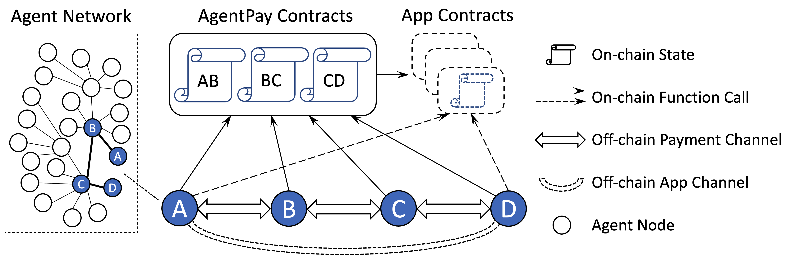
The figure above illustrates the high-level architecture of the AgentPay network. It consists of three main components: the payment channel, the app channel, and the nodes connected by these channels. Together they enable secure, low-latency economic interactions off-chain, with on-chain settlement only when necessary.
Payment channel. This is the hop-by-hop value-transfer layer, combining on-chain channel contracts with an off-chain payment protocol. The shared contracts keep only minimal states for each adjacent pair of peers, while the off-chain protocol defines how peers exchange and advance signed states and when to invoke the rare on-chain calls. Payments can carry arbitrary conditions based on on-chain-verifiable states, enabling programmable logic such as “pay if result verified” or “release tokens once oracle confirms.” Multi-hop routing allows a payment to traverse a path of channels (e.g., A→B→C→D) with instant off-chain finality at each hop and enforceability on-chain if disputed.
App channel. This is the application-logic layer, combining end-to-end app contracts with a virtual off-chain channel protocol between the session participants. Dashed lines in the figure above indicate these virtual modules, which connect agents directly without intermediate hops or on-chain initialization. App channels express arbitrary logic—such as inference fulfillment, data delivery, or API metering—and expose a standard query interface so that payment conditions can depend on app outcomes. An on-chain contract is only deployed if a dispute arises, allowing agents to execute complex application logic entirely off-chain while keeping costs low and interactions efficient.
Nodes connected by channels. Each node runs the payment channel protocol and participates in the AI agent network by opening a payment channel with at least one peer. The network protocol itself is a homogeneous peer-to-peer system—every node follows the same protocol and can communicate directly with others. However, roles can differentiate based on liquidity, uptime, and capability: nodes with higher capital reserves and stronger reliability act as service nodes (server-like), maintaining many channels, relaying payments, and improving connectivity; regular agent nodes (client-like) typically connect to one or more service nodes, can go offline when idle, and still retain full custody and settlement rights. The boundary between these roles is fluid, and any node can evolve into a service node by contributing liquidity and uptime.
Design Principles
AgentPay is designed to provide a high-performance, low-cost, and trust-free platform for decentralized applications and AI-agent payments, without compromising security or decentralization. The protocol design follows careful consideration of activity, cost, and failure patterns in large-scale distributed systems. The following principles guide the architecture, listed in order of priority.
Minimize on-chain footprint. On-chain operations are expensive and slow. AgentPay keeps nearly all state transitions off-chain and interacts with the blockchain only when absolutely necessary—such as during deposits, withdrawals, or dispute resolution. Each on-chain operation is deeply optimized to reduce gas consumption by avoiding redundant contract deployment, minimizing the number of transactions per business-level action, and keeping per-channel storage compact.
Minimize relay-node on-chain interaction. To achieve scalability and robustness, the system follows an end-to-end principle: complexity is pushed to the edge of the network. Intermediate service nodes that relay payments should have minimal need to perform on-chain operations or view calls. Responsibility for dispute handling remains with the sender and receiver, simplifying the relay nodes’ role and improving network resilience against failures or attacks.
Minimize on-chain view calls. While view calls do not consume gas, they can still become performance and cost bottlenecks when used heavily in production. Most entities rely on external RPC providers for blockchain queries, which introduces latency and cost. AgentPay therefore minimizes view calls by caching required data locally and exchanging verified state information directly between peers whenever possible.
Minimize off-chain communication overhead. Although off-chain communication is far faster than on-chain interaction, it must still be optimized for latency and reliability. The AgentPay protocol reduces message round trips and storage I/O for every operation to achieve high throughput. Efficient message encoding and lightweight acknowledgment patterns ensure stable real-time performance, even under high network load.
Adopt a decoupled architecture. AgentPay separates payment channels from application channels through a simple conditional interface. This modular design reduces system complexity, improves scalability, and allows payment conditions to depend on arbitrary on-chain or off-chain verifiable states. The decoupled structure enables composable interactions between agents, allowing new application types and services to integrate without changing the core payment logic.
Enable decentralized, peer-controlled versioning. Unlike proxy-based upgrade patterns that rely on centralized administrators and fragile storage layouts, AgentPay adopts a versioned contract architecture where each channel can migrate independently to a new contract version once both peers agree. This eliminates proxy complexity, removes the need for trusted upgrade controllers, and allows seamless logic evolution without downtime. Structured modular contracts and protobuf-based serialization ensure forward compatibility and smooth feature extension across agents and chains.
Summary
Celer AgentPay enables real-time, trust-free payments among autonomous AI agents by combining on-chain security with off-chain performance. Its architecture separates the payment channel, app channel, and agent network—supporting programmable conditional payments, lightweight virtual application sessions, and a homogeneous peer-to-peer network of agents and service nodes.
Guided by principles that minimize on-chain cost, reduce communication overhead, and preserve modularity, AgentPay provides a scalable and extensible foundation for autonomous economic coordination across blockchains and AI ecosystems.
On-Chain Contracts
This section describes the core structure of the Celer AgentPay generalized state-channel system, its on-chain contract design, and the API flows for on-chain operations.
The AgentPay contract suite comprises a small set of smart contracts that bind the core abstractions (channels, payments, conditions) to minimal, verifiable on-chain states. These contracts define only the interaction logic between two peers; the network emerges by composing many such peer-to-peer channels via the off-chain protocol (covered in the next section).
The following sections describe the core data structures and architecture components of the AgentPay contracts, walk through common channel operations, and feature the unique contract versioning design to allow decentralized, peer-controlled contract upgrade.
Core Data Structures
We first introduce the core structural elements of AgentPay, which center on two fundamental concepts: the duplex payment channel and the conditional payment. Understanding how these components are defined, how they interconnect, and how they are optimized for scalability, efficiency, and security is essential to grasping the overall AgentPay architecture.
Duplex Payment Channel
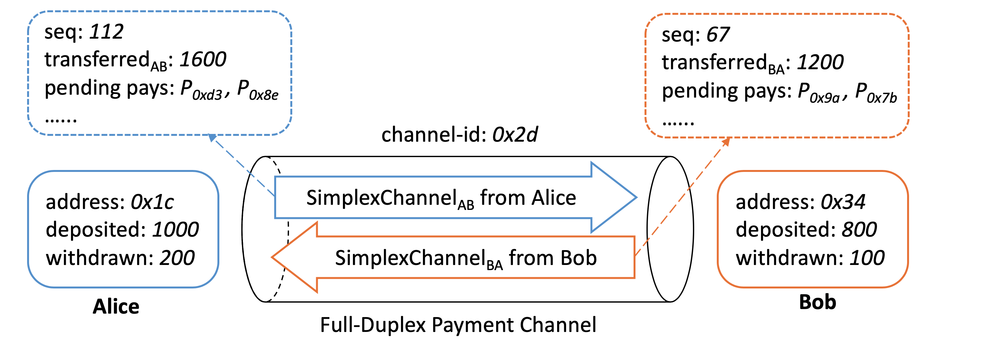
The figure above illustrates the logical data model of an AgentPay state channel between two peers, Alice and Bob. Not all information shown here resides on-chain. The model consists of two types of peer-related data:
- On-chain states (solid boxes) — include peer addresses and the amounts of tokens each has deposited or withdrawn. These minimal records are jointly maintained by the on-chain contracts and the off-chain nodes.
- Off-chain simplex states (dashed boxes) — include the cumulative amounts transferred between peers, pending conditional payments, and monotonically increasing sequence numbers. Peers exchange value off-chain by co-signing updated simplex states; the contracts only verify or settle them when required.
AgentPay adopts a full-duplex channel model for maximum performance. By splitting the shared state into two independent unidirectional simplex states, both peers can send payments concurrently. This design greatly simplifies off-chain coordination and improves throughput, as will be further detailed in the off-chain protocol section.
Simplex channel state
A simplex state represents one-directional flow of value within a duplex channel. It is defined using the following protobuf structure, with proto3 field options aligned to Solidity native types for compatibility with EVM-based smart contracts:
// The simplex channel state from one peer to another.
// Two simplex channels form a full-duplex channel.
message SimplexPaymentChannel {
// unique channel ID per duplex channel
bytes channel_id = 1 [(soltype) = "bytes32"];
// address of the peer who owns and updates the simplex state
bytes peer_from = 2 [(soltype) = "address"];
// simplex state sequence number
uint64 seq_num = 3 [(soltype) = "uint"];
// amount of token already transferred to peer, monotonically increasing
TokenTransfer transfer_to_peer = 4;
// list of pending conditional payment IDs
PayIdList pending_pay_ids = 5;
// the last resolve deadline for all pending pays
uint64 last_pay_resolve_deadline = 6 [(soltype) = "uint"];
// total locked amount of all pending pays
bytes total_pending_amount = 7 [(soltype) = "uint256"];
}
This protobuf representation is jointly used by both the off-chain protocol and the on-chain contracts across supported blockchains. A simplex state is valid only if it is co-signed by both peers and has the highest sequence number.
Given two valid simplex states and the on-chain records of deposits and withdrawals, either peer’s balance can be deterministically computed at any time. For example, the available balance of peer A is: A.available = A.deposit - A.withdraw + B.transfer - A.transfer - A.pending .
List of pending pay IDs
Details of the payment-related fields in the simplex state (such as conditional payments) will be discussed later. Here, we focus on how pending conditional payments are represented in field 5 of the simplex state.
AgentPay does not rely on Merkle proofs to summarize pending payments, since maintaining a Merkle root for a rapidly changing dataset is computationally expensive and would require additional on-chain transactions during disputes.
Instead, the list of pending payment IDs is stored directly in the simplex state. Sending or clearing a conditional payment off-chain simply involves adding or removing its payment ID from the list (field 5) and, if applicable, updating the transferred amount (field 4).
On-chain contracts never persist the pending pay IDs. When needed, they can parse the list from the submitted input and compute the outcome within a single transaction. The protobuf structure of this list is defined as follows:
// Linked list of PayID lists to record an arbitrary number of pending payments.
// Used in SimplexPaymentChannel field 5.
message PayIdList {
// list of pay IDs
repeated bytes pay_ids = 1 [(soltype) = "bytes32"];
// hash of the next PayIdList
bytes next_list_hash = 2 [(soltype) = "bytes32"];
}
Because every layer-1 blockchain enforces a gas limit on per-transaction data size, AgentPay employs a linked list of lists design to support a potentially large number of pending payments.
In practice, a single list usually suffices—for example, on Ethereum, a single transaction can process hundreds of pay IDs within a simplex state.
Conditional Payment
Another key component of AgentPay is the conditional payment — a programmable token transfer from one peer to another within a unidirectional simplex channel. The payment’s outcome can depend on multiple on-chain or off-chain conditions, with flexible logic defining how these conditions determine the final transfer amount.
The protobuf representation of a conditional payment is shown below:
// Globally unique and immutable conditional payment.
// The hash of this message is used to compute the pay ID in PayIdList field 1.
message ConditionalPay {
// the unix nanoseconds timestamp, help ensure payment uniqueness
uint64 pay_timestamp = 1 [(soltype) = "uint"];
// public key used by pay source to vouch the pay result
bytes src = 2 [(soltype) = "address"];
// public key used by pay destination to vouch the pay result
bytes dest = 3 [(soltype) = "address"];
// list of generic conditions for the payment
repeated Condition conditions = 4;
// payment amount resolve logic based on condition outcomes.
TransferFunction transfer_func = 5;
// deadline for the pay to be resolved on-chain
uint64 resolve_deadline = 6 [(soltype) = "uint"];
// challenge time window to resolve a pay on chain
uint64 resolve_timeout = 7 [(soltype) = "uint"];
// address of the pay resolver contract
bytes pay_resolver = 8 [(soltype) = "address"];
// chain id of the intended target chain
uint64 chain_id = 9 [(soltype) = "uint"];
}
All fields are defined by the payment source and remain immutable as the payment is relayed across multiple hops. Each payment is identified by a globally unique ID computed as:payID = Hash(Hash(pay) + pay.pay_resolver). This ensures determinism and binding to a specific resolver contract (see PayRegistry for details).
Note on decoupled architecture: A conditional payment cleanly separates condition resolution from fund allocation. Each Condition may reference an on-chain or off-chain contract that exposes standardized interfaces to verify finality and retrieve outcomes, while the TransferFunction interprets those outcomes to compute the final payment amount. This modular design gives AgentPay high flexibility and robustness, supporting use cases from simple hashlocks to complex application-driven settlements with minimal complexity and cost.
Condition
Each conditional payment can include one or more Condition entries, defining the logic that determines whether and how much value should be transferred. The TransferFunction (described later) takes these condition outcomes as inputs to compute the final payment amount.
// Condition of a payment, used in ConditionalPay field 4.
message Condition {
// three types: hash_lock, deployed_contract, virtual_contract
ConditionType condition_type = 1;
// one of the following three fields:
// 1. hash of the secret preimage
bytes hash_lock = 2 [(soltype) = "bytes32"];
// 2. onchain deployed contract
bytes deployed_contract_address = 3 [(soltype) = "address"];
// 3. offchain virtual contract
bytes virtual_contract_address = 4 [(soltype) = "bytes32"];
// arg to query condition status from the deployed or virtual contract
bytes args_query_finalization = 5;
// arg to query condition outcome from the deployed or virtual contract
bytes args_query_outcome = 6;
}
A condition can be of three types:
- Hash Lock Condition — used to secure multi-hop payments. The payment includes a hash
hof a secret preimage; it can only be resolved on-chain once the preimagevis revealed. - Deployed Contract Condition — references an on-chain contract that defines arbitrary application logic. The contract must expose standardized interfaces
isFinalizedandgetOutcome, which the AgentPay contracts call using the arguments in fields 5 and 6. - Virtual Contract Condition — represents an off-chain “virtual” contract maintained by involved peers (e.g., payment source and destination). It is only deployed on-chain if a dispute arises. The on-chain system locates it via a unique identifier (field 4), derived from the hash of the virtual contract code, initial state, and a nonce.
Note on decoupled architecture: getOutcome provides a unified interface for retrieving any application-defined result that can be interpreted into payment resolution logic. This clear separation between application state and fund allocation gives AgentPay maximum flexibility to support a wide range of contract types and condition combinations.
Transfer function
Once all conditions have been finalized, the transfer_func field in the ConditionalPay message determines how the payment amount is computed. Each condition can yield either a boolean or numeric outcome, and the transfer function defines how these outcomes are combined to resolve the final amount. AgentPay supports multiple flexible resolution logics, as shown below:
// Payment result resolving function — takes pay.conditions as input.
// Used in ConditionalPay field 5.
message TransferFunction {
// amount resolving logic based on the condition outcome
TransferFunctionType logic_type = 1;
// maximum token transfer amount of this payment
TokenTransfer max_transfer = 2;
}
enum TransferFunctionType {
BOOLEAN_AND = 0; // pay full amount if every condition is true
BOOLEAN_OR = 1; // pay full amount if any condition is true
BOOLEAN_CIRCUIT = 2; // customized boolean circuit logic
NUMERIC_ADD = 3; // pay the sum of all condition outcomes
NUMERIC_MAX = 4; // pay the max of all condition outcomes
NUMERIC_MIN = 5; // pay the min of all condition outcomes
}
This flexible abstraction enables a wide spectrum of applications — from simple multi-signature or hashlock-based transfers to programmable contracts that distribute value according to computation results, oracle feeds, or aggregated off-chain metrics.
To summarize, ConditionalPay is a self-contained structure that encapsulates all information defining a conditional payment — including its participants, conditions, resolution logic, and resolver contract. Later pages will describe how these payments are exchanged off-chain and how they interact with the on-chain contracts during settlement or dispute.
On-Chain States
The two fundamental components introduced earlier — the duplex payment channel and the conditional payment — form the basis for AgentPay’s on-chain operations.
This section describes the data structures maintained by the AgentPay smart contracts. While implementations may vary slightly across different blockchains, the core structure remains consistent.
Below is an example based on the Solidity implementation:
// Mapping from channel ID to its duplex channel state
mapping(bytes32 => Channel) channelMap;
// Information of a duplex channel
struct Channel {
// current state in the channel state machine
ChannelStatus status;
// token supported by this channel
PbEntity.TokenInfo token;
// time window to challenge a unilateral request
uint disputeTimeout;
// the deadline to challenge a unilateral channel settling request
uint settleFinalizedTime;
// information about the two peers, detailed below
PeerProfile[2] peerProfiles;
// fields tracking withdrawal requests (omitted for simplicity)
...
}
// Information of each channel peer
struct PeerProfile {
address peerAddr; // on-chain account address
uint deposit; // total deposited amount (monotonically increasing)
uint withdrawal; // total withdrawn amount (monotonically increasing)
PeerState state; // latest snapshot of the peer’s simplex state, detailed below
}
// Snapshot of a peer’s simplex state,
// stored when a peer initiates a dispute or records an off-chain state
struct PeerState {
uint seqNum; // sequence number (field 3 of SimplexPaymentChannel)
uint transferOut; // amount transferred to the other peer (field 4)
uint lastPayResolveDeadline; // latest resolve deadline (field 6)
uint pendingPayOut; // total locked pending amount (field 7)
bytes32 nextPayIdListHash; // hash of next PayIdList for pending payments
}
The above structures store per-channel state information.
In addition, AgentPay maintains a global registry of resolved payments, which records the final on-chain outcomes of individual conditional payments:
// Mapping from payID to payment resolution information
mapping(bytes32 => PayInfo) public payInfoMap;
struct PayInfo {
uint amount; // final resolved payment amount
uint resolveDeadline; // challenge deadline, ≤ field 6 of ConditionalPay
}
These compact, carefully scoped data structures ensure minimal on-chain footprint while preserving complete verifiability of every channel’s state and payment outcome.
Contracts Architecture
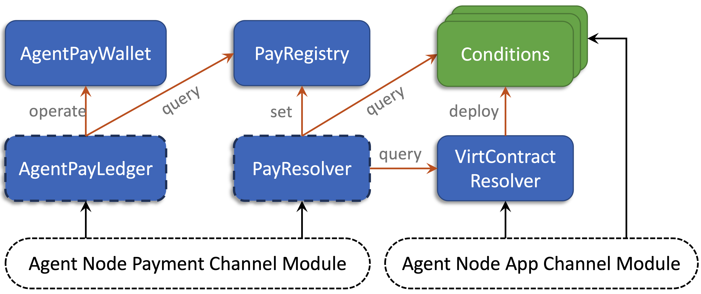
The figure above illustrates the AgentPay on-chain contract architecture. The white dashed boxes at the bottom represent user-side off-chain components. Each colored rectangle denotes an individual on-chain contract: blue modules are AgentPay core contracts (those with dashed borders are versioned contracts that can evolve over time through peer-agreed migration), while green modules represent external condition contracts defined by applications. Orange arrows indicate inter-contract function calls with their primary purpose, and black arrows show user interactions from Agent nodes.
The modular design separates critical asset custody from evolving business logic, enabling safer upgrades and clearer responsibilities. This section provides a high-level overview of all AgentPay contracts and their relationships. The detailed channel operations and workflows are described later in the Channel Operations section.
AgentPayWallet
The AgentPayWallet contract maintains multi-owner, multi-token wallets for all AgentPay channels. It serves purely as a secure asset custodian, holding users’ tokens without embedding any payment or business logic — those responsibilities reside in the AgentPayLedger contract.
Each wallet defines two distinct roles:
- Owners — the channel peers who jointly own the wallet and receive withdrawn funds.
- Operator — a single contract (typically an AgentPayLedger) authorized to manage wallet operations. The operator can (1) withdraw funds on behalf of owners and (2) transfer operatorship to another ledger version during a coordinated migration.
AgentPayWallet exposes only the minimal, highly-audited functions needed to create wallets, deposit and withdraw tokens, and transfer operatorship. This simplicity makes it extremely robust and safe. A single AgentPayWallet contract is shared across the entire network. Channel peers never interact with it directly; instead, they access their funds through its operator — the AgentPayLedger contract described next.
AgentPayLedger
The AgentPayLedger contract is the core of all AgentPay on-chain logic and the primary entry point for most on-chain user operations. It defines the AgentPay channel state machine, maintains the core payment channel logic, acts as the operator of AgentPayWallet to manage token assets, and exposes a comprehensive set of APIs for peers to open, update, and settle channels.
During execution, AgentPayLedger interacts with other contracts to coordinate channel operations:
- AgentPayWallet — handles deposits, withdrawals, and operatorship transfers.
- PayRegistry — retrieves resolved payment results when finalizing settlements.
AgentPayLedger is implemented as a versioned contract, allowing peers to migrate to newer ledger versions by mutual agreement. Unlike the single global AgentPayWallet, multiple ledger versions can coexist — each channel pair freely selects and migrates to the version they trust, ensuring flexibility and continuous operation without network downtime.
PayResolver
The PayResolver contract defines the on-chain logic for resolving conditional payments. It provides simple APIs that allow an agent to finalize a payment on-chain when cooperative off-chain resolution is not possible.
When executed, PayResolver interacts with several other contracts to complete the resolution process:
- PayRegistry — records the finalized payment amount in the global registry.
- Conditions — queries outcome data from external application or condition contracts.
- VirtContractResolver — retrieves the deployed address of a virtual contract when needed for on-chain dispute resolution.
PayResolver is implemented as a versioned contract, allowing the payment source to specify which resolver version to use for each payment (field 8 of the ConditionalPay message). The resolver address is embedded in the computation of each payment’s unique ID, ensuring that payment results are tightly bound to their designated resolver logic and cannot be tampered with retroactively.
PayRegistry
The PayRegistry contract serves as the global record of finalized payment results. It provides a simple interface for registering resolved payment amounts, indexed by a unique payment ID.
Each payment ID is computed as: payID = Hash(Hash(pay), setterAddress), where setterAddress is typically the address of the designated PayResolver. This ensures that only the resolver explicitly specified in the ConditionalPay message (field 8) can record the result for that payment.
Once a payment result is written to the PayRegistry, it becomes immutable and publicly accessible. Any channel that includes the corresponding conditional payment can then use the recorded result—either off-chain or on-chain—to finalize settlement.
VirtContractResolver
The VirtContractResolver contract is responsible for instantiating off-chain virtual contracts when a dispute requires them to be brought on-chain. It establishes a mapping from each virtual contract’s identifier (field 4 of the Condition message) to its deployed on-chain address.
Once instantiated, the virtual contract becomes an on-chain addressable condition contract that the PayResolver can query via its standard isFinalized and getOutcome interfaces to resolve payments involving virtual contract conditions.
Conditions
Conditions are external application contracts that define the logic behind conditional payments. They are not part of the AgentPay core contracts but are queried by the PayResolver through the standard isFinalized and getOutcome interfaces during payment resolution.
A condition contract can be either a deployed on-chain contract or an instantiated virtual contract brought on-chain through the VirtContractResolver. Any smart contract that implements these two interfaces can serve as a valid condition for AgentPay payments, enabling flexible and composable off-chain logic that remains verifiable on-chain when needed.
Channel Operations
This section explains the key on-chain operations in AgentPay, including opening channels, depositing and withdrawing funds, resolving payments, and closing channels. Although most payments occur off-chain for efficiency, the system is optimized to handle the occasional on-chain interactions with minimal cost and latency.
The AgentPayLedger contract manages each channel’s on-chain lifecycle and acts as the main entry point for user operations. Every payment channel transitions through the following five states:
Uninitialized— the channel has not yet been created in the current AgentPayLedger.Operable— the channel is active and available for regular use.Settling— the channel is undergoing unilateral settlement.Closed— the channel has been finalized and closed.Migrated— the channel has been moved to another AgentPayLedger version.
Open Channel
The AgentPayLedger contract provides an openChannel API that enables participants to create and fund a payment channel in a single transaction. The API accepts a co-signed channel initializer message from both peers:
message PaymentChannelInitializer {
// token type and initial balance distribution between peers
TokenDistribution init_distribution = 1;
// expiration time for this initializer
uint64 open_deadline = 2 [(soltype) = "uint"];
// time window to challenge unilateral actions
uint64 dispute_timeout = 3 [(soltype) = "uint"];
// index of the peer receiving any native tokens (e.g., msg.value)
uint64 msg_value_receiver = 4 [(soltype) = "uint"];
// chain id of the intended target chain
uint64 chain_id = 5 [(soltype) = "uint"];
// address of the intended target ledger
bytes ledger_address = 6 [(soltype) = "address"];
}
Upon receiving a valid initializer, the AgentPayLedger executes the following steps atomically:
- Creates a wallet in AgentPayWallet, using the returned wallet address to derive the unique
channel_id = Hash(walletAddress, ledgerAddress, Hash(channelInitializer)). - Initializes the channel entry in on-chain storage with the provided parameters.
- Transfers the specified token amounts—either ERC-20 or native tokens—from the peers to the AgentPayWallet according to the agreed initial distribution.
This single-step process allows peers to open a fully funded, operational channel without multiple setup transactions.
Deposit
Anyone — not just the channel peers — can deposit funds into an existing payment channel by calling the deposit API of AgentPayLedger. The function takes three arguments: the channel ID, the receiver address, and the deposit amount.
The AgentPayLedger contract verifies that the token type matches the channel configuration, then transfers the tokens from the sender to the channel’s wallet managed by AgentPayWallet.
While all tokens ultimately reside in the AgentPayWallet contract, ERC-20 token deposits still require a prior approve call granting AgentPayLedger permission to transfer the tokens on behalf of the depositor.
Withdraw
Peers can withdraw funds from a channel at any time. AgentPayLedger supports two withdrawal modes:
- Cooperative withdrawal — completed instantly in a single transaction when both peers agree.
- Unilateral withdrawal — used when a peer is unavailable, requiring two transactions and a challenge period.
Cooperative withdraw
When both peers are online and cooperative, the withdrawer can execute a withdrawal in one transaction by calling the cooperativeWithdraw API and providing the co-signed message:
message CooperativeWithdrawInfo {
bytes channel_id = 1 [(soltype) = "bytes32"];
uint64 seq_num = 2 [(soltype) = "uint"]; // unique sequence number
AccountAmtPair withdraw = 3; // recipient and amount
uint64 withdraw_deadline = 4 [(soltype) = "uint"];
bytes recipient_channel_id = 5 [(soltype) = "bytes32"]; // optional
}
Upon verification, AgentPayLedger transfers tokens from the channel’s AgentPayWallet either to the specified recipient account (field 3) or to another channel (field 5). This second option enables service nodes to quickly rebalance liquidity across multiple channels without first withdrawing on-chain.
Unilateral withdraw
If a peer cannot reach its counterparty for co-signing, it can initiate a unilateral withdrawal using intendWithdraw(channel_id, amount, recipient_channel_id). This starts a challenge window, during which the counterparty may call vetoWithdraw to dispute the request. Once the window closes without objection, the withdrawer finalizes the operation by calling confirmWithdraw.
This two-step mechanism guarantees both liveness and fairness when one peer is temporarily offline.
Resolve Payment
When peers cannot cooperatively clear a payment off-chain, they can resolve it on-chain through the PayResolver contract before the payment’s resolve deadline (field 6 of the ConditionalPay message). The resolver validates the payment’s final outcome and records it in the global PayRegistry, serving as a shared on-chain reference for all related channels.
Payments can be resolved either by evaluating their conditions or by submitting a vouched result co-signed by the source and destination.
Resolve payment by conditions
The resolvePaymentByConditions API of PayResolver is used once all conditions of a payment are finalized on-chain. The call includes:
- The complete ConditionalPay data.
- All hash preimages for any hash-lock conditions.
The contract verifies the preimages, queries each condition’s outcome, and computes the resulting amount, which is then written to the PayRegistry.
All conditions must be finalized before the call executes; otherwise, the transaction will revert. For payments referencing virtual contracts, those must first be instantiated on-chain through the VirtContractResolver contract — invoked only in the dispute path, when an off-chain virtual App contract needs to be materialized for resolution.
Only the payment source or destination can initiate this operation; relay nodes never do. The complete flow is described in the off-chain protocol section.
Resolve Payment by Vouched Result
Relay nodes never need to evaluate payment conditions themselves. In routed payments, conditions are relevant only to the original source and final destination, while intermediate relays care solely about the amount they should safely receive from upstream and forward downstream.
AgentPay supports vouched resolution, where the payment source and destination co-sign an agreed result. This vouched proof allows any relay to securely resolve a disputed payment with its direct peer on-chain, even if that peer becomes uncooperative.
message VouchedCondPayResult {
bytes cond_pay_result = 1; // serialized CondPayResult
bytes sig_of_src = 2;
bytes sig_of_dest = 3;
}
message CondPayResult {
bytes cond_pay = 1; // serialized ConditionalPay
bytes amount = 2 [(soltype) = "uint256"];
}
Any node holding this co-signed proof can call the resolvePaymentByVouchedResult API to finalize the payment and record it in the PayRegistry. As detailed in the off-chain protocol, relays can also use this vouched proof to clear their own corresponding off-chain payments with upstream peers.
Dispute the Payment Result
All nodes involved in a routed payment reference the same result in PayRegistry, ensuring consistency and fairness even if the payment source and destination collude to submit conflicting results.
PayResolver updates the registry according to the following rules:
- If the resolved amount equals
transfer_func.max_transfer(field 2 of the TransferFunction referenced by field 5 of ConditionalPay), the result is immediately finalized. - Otherwise, a challenge window (field 7 of ConditionalPay) opens, during which others may re-resolve the payment with additional evidence.
During the challenge period, a result can only be updated to a higher amount, never lower—a protection mechanism for relay nodes aligned with off-chain protocol guarantees. The result becomes final when the challenge window closes or the resolve deadline passes, whichever comes first.
Snapshot States
Channel peers can record co-signed off-chain simplex states on-chain as a lightweight state checkpoint, without closing the channel or processing pending payments. This is useful before a planned offline period, or as periodic insurance against later disputes: once a state is recorded on-chain, no older state can be used to settle the channel unilaterally.
The snapshotStates API of AgentPayLedger accepts a co-signed array of simplex states. The states may belong to different channels — snapshotStates natively supports multi-channel batch processing in a single transaction, reducing gas overhead for service nodes that maintain many channels at once.
Upon receiving a valid request, AgentPayLedger verifies the co-signatures and updates the on-chain record of each simplex state’s sequence number and transferred balance. The channel stays in the Operable state — no challenge window opens, pending payments are not processed, and normal off-chain operation continues.
Snapshotting is a self-service alternative to delegating state protection to the State Guardian Network; the two approaches can also be combined.
Settle / Close Channel
A node can choose to settle or close a channel with its peer either cooperatively or unilaterally, similar to the withdrawal operation. Cooperative settling is preferred since it completes in a single transaction, while unilateral settling is used only when peers cannot agree or one party becomes unresponsive.
Cooperative Settle
The cooperativeSettle API in AgentPayLedger allows peers to close a channel instantly with a co-signed request containing the final balance distribution.
message CooperativeSettleInfo {
bytes channel_id = 1 [(soltype) = "bytes32"];
// a sequence number greater than both simplex channels' sequence numbers
uint64 seq_num = 2 [(soltype) = "uint"];
// final balance distributions to the two peers
repeated AccountAmtPair settle_balance = 3;
// until when this message remains valid
uint64 settle_deadline = 4 [(soltype) = "uint"];
}
Upon receiving a valid co-signed request, AgentPayLedger closes the channel and distributes balances according to field 3. All off-chain simplex states and pending conditional payments are ignored — the cooperative signature itself serves as the final agreement.
Unilateral Settle
If cooperation is not possible, a peer can initiate a unilateral settle by calling intendSettle, providing the latest co-signed off-chain simplex states as input. AgentPayLedger computes the final balance distribution using these states and the outcomes of pending payments retrieved from the PayRegistry.
A challenge window is then opened, allowing the counterparty to submit newer simplex states with higher sequence numbers if available. Once the window closes, the initiating peer can finalize the process by calling confirmSettle, which closes the channel and releases the final balances accordingly.
Decentralized Versioning
Smart contracts are immutable once deployed, so evolving them safely has always been a challenge. Traditional upgrade patterns—such as proxy-based architectures—centralize control in an upgrade admin and rely on fragile delegatecall mechanics that demand strict storage layout consistency. This introduces operational risk and undermines decentralization.
AgentPay takes a different approach through decentralized, version-based evolution. Instead of mutating contract code via proxies, new versions of logic contracts are deployed independently. Each payment channel is jointly controlled by its two peers, who can cooperatively migrate their channel to a newer version at any time—without global coordination, admin keys, or downtime.
This design achieves two goals:
- Trustless control — only the channel peers can decide which contract version governs their funds and state transitions.
- Seamless migration — peers can switch logic versions while keeping their existing balances and history intact, enabling smooth feature upgrades and bug fixes without interrupting off-chain operations.
In this architecture:
- AgentPayLedger and PayResolver are versioned modules, representing the system’s programmable logic layer that may evolve over time.
- AgentPayWallet, PayRegistry, and VirtContractResolver are permanent modules that store assets and critical data. These remain stable, with minimal logic and no upgrade surface.
Together, this structure preserves the immutability and auditability of asset-holding contracts, while allowing rapid iteration and feature evolution in the channel and payment logic.
Versioning PayResolver
As described in Resolve Payment, PayResolver defines the on-chain logic for resolving conditional payments and records results in the global PayRegistry. Each conditional payment specifies its resolver address (field 8 of ConditionalPay), which determines how its conditions are verified and finalized.
Because PayResolver governs the final outcome of payments, each agent node maintains its own accepted resolver list and only acknowledges payments referencing resolvers it trusts.
When a new PayResolver version is deployed—whether to add features, support new condition types, or fix issues—nodes can upgrade independently and without any on-chain transaction:
- Relay nodes add the new PayResolver contract to their local whitelist.
- Payment sources begin referencing the new contract in subsequent conditional payments.
This decentralized process avoids downtime and centralized control: each node freely chooses which resolver versions to trust and adopt. If a source uses a new resolver that a relay does not yet accept, the payment will simply be rerouted or rejected—preserving both autonomy and safety across the network.
Versioning AgentPayLedger
As introduced in Contracts Architecture, AgentPayLedger manages payment channel logic, while AgentPayWallet securely holds assets. Each wallet has multiple owners (the channel peers) and a single operator — its associated ledger contract. Different channel pairs may choose different AgentPayLedger versions, all interacting with the same AgentPayWallet contract.
AgentPay allows channel peers to cooperatively migrate their AgentPayLedger to a new version while continuing to use the same wallet, with zero off-chain downtime.
AgentPayLedger migration process
Migration requires mutual consent from both channel peers via a co-signed migration message:
message ChannelMigrationInfo {
bytes channel_id = 1 [(soltype) = "bytes32"];
bytes from_ledger_address = 2 [(soltype) = "address"];
bytes to_ledger_address = 3 [(soltype) = "address"];
uint64 migration_deadline = 4 [(soltype) = "uint"];
}
Anyone can complete the migration by submitting this message to the new AgentPayLedger’s migrateChannelFrom API.
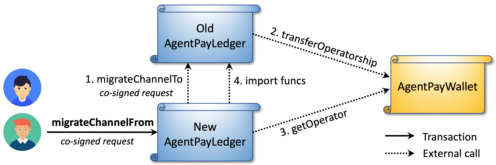
As illustrated above, the migration consists of four inter-contract calls within one transaction:
- The new ledger invokes
migrateChannelToon the old ledger. - The old ledger transfers wallet operatorship to the new ledger.
- The new ledger verifies the transfer via the wallet’s
getOperatorfunction. - The new ledger imports state data from the old ledger to initialize the channel entry.
A migration request has higher priority than intendSettle, meaning peers can migrate even if the channel is in a Settling state. Upon migration, the channel becomes Operable again. This enables immediate off-chain upgrades with deferred on-chain finalization: once a migration is co-signed, peers can begin operating under the new logic off-chain before the transaction is executed.
Zero-downtime upgrade flow
Channel peers do not need to pause off-chain operations when migrating to a new AgentPayLedger version. The new logic becomes effective as soon as the migration request is co-signed, while the on-chain transition can be finalized later before the deadline. During this period, peers should monitor events from both the old and new ledgers.
If the SimplexPaymentChannel message format remains unchanged, peers only need to co-sign the migration request and can continue exchanging off-chain payments seamlessly.
If the proto definition changes, peers must first co-sign equivalent states using the new format (representing the same balances as the old states), then co-sign the migration request and continue under the new logic.
Manual fallback upgrade
In rare cases where automated migration fails (e.g., due to critical ledger bugs), peers can still cooperatively update the wallet operator through AgentPayWallet.proposeNewOperator. If all owners agree on the new operator, the wallet updates accordingly. This manual path should only be used as a last resort.
Summary
AgentPay’s decentralized versioning framework achieves the rare balance between immutability and evolvability. Critical asset-holding contracts like AgentPayWallet and PayRegistry remain permanently secure and stable, while logic modules such as AgentPayLedger and PayResolver can evolve through cooperative peer-driven migration. This design eliminates centralized upgrade control, avoids the centralization and fragility of proxy-based patterns, and enables the network to upgrade safely, flexibly, and without interrupting off-chain operations.
The next section, Off-chain Protocol, builds on these on-chain primitives to describe how agents exchange and synchronize channel states, route payments across the network, and ensure instant off-chain finality with on-chain enforceability.
Off-Chain Protocols
This section describes the hop-by-hop and end-to-end protocols that power AgentPay’s off-chain payment network. AgentPay achieves high throughput and scalability at both levels through two key architectural principles:
- At the hop-by-hop layer, the duplex channel is split into two unidirectional simplex states, allowing peers to send and receive payments concurrently with minimal coordination.
- At the end-to-end layer, the payment and application channels are decoupled, so multi-hop payments can be routed efficiently without carrying full application logic across the path.
Together, these design choices enable agents to exchange payments with sub-second latency, while preserving full security and on-chain enforceability in case of dispute.
The following sections explain how peers update off-chain channel states, relay conditional payments across multiple hops, and maintain consistent global settlement guarantees through cryptographic proofs and cooperative message signing.
Single-Hop Protocols
A single-hop conditional payment forms the fundamental building block of the AgentPay network. It underpins the system’s high performance, robustness, and flexibility, and serves as the basis for constructing multi-hop and end-to-end payments. Understanding the single-hop conditional payment structure and the associated messaging protocol is essential before exploring the higher-level constructs.
As described earlier, AgentPay adopts a full-duplex channel model to maximize off-chain throughput. If two peers instead shared a single state struct with one global sequence number, they would need to synchronize every update, introducing contention and latency.
By contrast, a duplex channel splits the shared state into two unidirectional simplex channels, each with an independent sequence number. This allows both peers to send payments concurrently without coordination overhead. To prevent race conditions, only the peer_from (field 2 of the simplex channel) is permitted to initiate state updates. Each off-chain update follows a simple two-step handshake:
- The
peer_fromcreates a new simplex state, signs it, and sends it to the counterparty. - The counterparty verifies the update and returns the co-signed new off-chain state.
Because both simplex directions operate independently yet symmetrically, the following descriptions focus on one direction; the reverse direction functions identically.
Send Conditional Payment
Sending a conditional payment involves creating a new co-signed simplex channel state that adds a new entry to the pending pay list (field 5) and updates related metadata. The process requires one round trip of two off-chain messages — CondPayRequest and CondPayResponse.
CondPayRequest — sent by the peer initiating or forwarding a conditional payment. It includes:
- Payment data — the immutable conditional payment message defined by the payment source.
- New one-sig state — a new simplex state signed by
peer_from, with an incremented sequence number (field 3), an updated pending pay list (field 5) including the new payment ID, and refreshed metadata (fields 6–7). - Base seq — the sequence number of the previous simplex state serving as the base for this update.
- Pay note — an optional metadata field (type
google.protobuf.Any) for auxiliary information exchanged off-chain.
CondPayResponse — sent by the receiving peer after validating all data fields in the request. It contains:
- Co-signed state — the fully signed simplex state. If the request is valid, this matches the proposed state; otherwise (e.g., invalid sequence number or packet loss), the peer returns its latest known co-signed state to support recovery.
- Error — an optional field with the reason for rejection and the sequence number of the failed request. The sender uses this to identify and retry the corresponding message.
Settle Conditional Payment
Once a conditional payment’s outcome is finalized, the two peers can cooperatively settle it off-chain. Settlement involves creating a new co-signed simplex channel state that removes the corresponding payment ID from the pending list (field 5), updates the transferred amount (field 4), and refreshes other relevant metadata.
The process uses up to three off-chain messages — PaymentSettleRequest, PaymentSettleResponse, and (optionally) PaymentSettleProof, which is used when the receiving peer initiates the settlement.
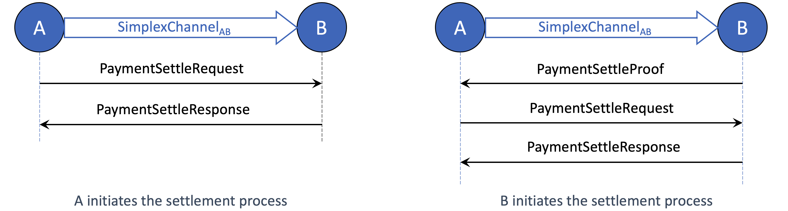
PaymentSettleRequest is sent by the peer_from side of the channel to clear one or more payments. It includes:
- Payments to be settled — a list of payment IDs, their settlement reasons (e.g., fully paid, vouched, expired, rejected, on-chain resolved), and the settled amounts.
- New one-sig state — a new simplex state signed by
peer_from, with an incremented sequence number (field 3), an updated pending pay list excluding the settled payments, and revised transfer and total pending amounts (fields 4 and 7). - Base seq — the sequence number of the previous simplex state on which this update is based.
PaymentSettleResponse is the reply from the receiving peer after verifying the request. It contains the co-signed simplex state and, if any error occurs, an optional error message.
PaymentSettleProof is used when the receiving peer wants to trigger the settlement process. Since the receiver cannot issue a new one-sig state, it instead sends this message to prompt the peer_from to initiate an update. It contains:
- Vouched payment results — a list of vouched results co-signed by each payment’s source and destination. The
peer_fromshould create settlement requests based on these vouched amounts. This field is only used for multi-hop payments with numeric conditions, which will be detailed later. - Payments to be settled (non-vouched) — a list of payment IDs and reasons (e.g., expired, rejected, on-chain resolved). The
peer_fromshould then evaluate the reasons and send settlement requests accordingly.
Send Unconditional Payment
Unlike conditional payments, which require two rounds of simplex state updates (send and settle), an unconditional payment between two peers completes in a single round trip.
AgentPay reuses the same CondPayRequest and CondPayResponse messages, with the only difference being the content of the new one-sig state. In this case, the simplex state includes an incremented sequence number (field 3) and an updated transferred amount (field 4). The receiving peer then finalizes the payment by replying with the new co-signed state.
Sliding Window Protocol
The previous section described the basic single-hop message flow between two channel peers for cooperative simplex state updates. Similar to standard communication systems, if the peer_from sender waits for a response before sending the next request, throughput is limited by the round-trip time. To improve performance, AgentPay applies a customized sliding window protocol for concurrent off-chain state updates.
Unlike TCP or other data transmission protocols, simplex state update messages are not independent packets — each new message depends on the previous simplex state. This means one invalid message invalidates all subsequent messages derived from it. AgentPay modifies the traditional sliding window design to support these dependencies while still achieving high concurrency and throughput.
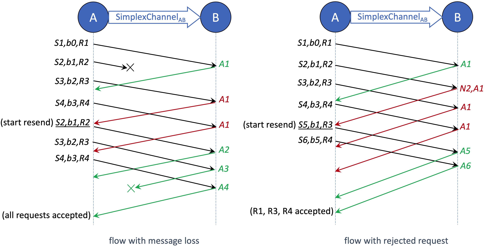
The figure above illustrates the sliding window workflow under two types of failures: message loss and request rejection. S represents the new simplex state, b the base sequence number, and R the request type (e.g., send or settle). For example, “S7,b4,R5” denotes a message carrying a one-signed simplex state with sequence number 7, built on the previous state 4, for request R5. A denotes acknowledgment (ACK), and N denotes negative acknowledgment (NACK). AgentPay assumes messages may be lost but are always delivered in order, as guaranteed by the underlying transport layer (e.g., gRPC).
Receiver protocol
On the receiving side, suppose the latest co-signed simplex state has sequence number n, and the incoming one-signed state has sequence s and base b. The receiver follows these rules:
- Sequence number check — The request is valid only if s > n and b == n. Otherwise, the receiver replies with an error message and an ACK of n, indicating it expects the next state to build on n.
- Request validity check — If the sequence is valid, the receiver further checks the request logic (e.g., payment setup or settlement validity). If the request is invalid, it replies with a NACK for s and an ACK of n, signaling that s is rejected and subsequent requests must continue from n.
Sender protocol
The peer_from sender maintains local tracking variables: last_used, last_ACKed, last_sent, base_for_next, and last_inflight_after_NACK. For instance, in the right-hand diagram, after receiving response “N2,A1,” the sender’s internal state becomes:last_used=4, last_ACKed=1, last_sent=4, base_for_next=1, last_inflight_after_NACK=4.
The sender follows these rules:
- Send request — Construct each new simplex state with sequence number
last_used + 1, based on the state with sequence numberbase_for_next, applying the latest off-chain state change. - Handle message loss — If ACKs indicate missing requests, the sender resends starting from the first unacked message. If an ACK is skipped (suggesting a lost ACK), it assumes earlier messages were accepted, since acceptance of a newer state implies acceptance of all prior states.
- Handle request rejection — Upon receiving a NACK, all unacked inflight requests based on the rejected state are reconstructed and resent. The sender resets
base_for_nexttolast_ACKedbefore resending the first inflight message.
End-to-End Protocols
This section describes the full lifecycle of end-to-end multi-hop conditional payments in AgentPay. As discussed earlier, AgentPay supports highly general conditional dependencies and flexible condition resolution functions. Two common types—boolean and numeric transfer functions—are implemented with optimized protocols and precompiled logic for efficiency.
Specialized end-to-end protocols can be derived and fine-tuned from the core single-hop conditional payment primitive, ensuring consistency across heterogeneous use cases while retaining high throughput.
The design follows the classic End-to-End Principle: most complexity resides at the network edge (payment source and destination), keeping the relay nodes lightweight and stateless. This approach enables simple, scalable, and robust relay implementations capable of supporting large-scale, high-frequency payment flows.
Pay with Boolean Conditions
We start with the flow of boolean-conditional payments, which are expected to be the most common in practice. Because the condition outcomes are strictly true or false, these payments always resolve to either the full amount or zero.
The end-to-end off-chain protocol follows AgentPay’s design principles — in particular, minimizing relay node on-chain interaction, on-chain view calls, and off-chain communication overhead.
For boolean-conditional payments, relay nodes never need to interpret condition logic or perform any on-chain operation — even in the presence of malicious or offline participants along the route. This makes the core payment network highly robust and scalable.
Properties of Boolean-Conditional Payments
Guided by the end-to-end principle, the boolean payment protocol is designed with the following properties:
- Simple: Relay nodes are agnostic to application and condition logic.
- Secure: Relay nodes remain safe under arbitrary application or condition behaviors.
- Robust: Relay nodes never need to monitor on-chain payment or condition states.
- Low on-chain cost: Relay nodes never initiate on-chain disputes.
- Low off-chain overhead: Relay nodes do not modify payment messages, and the number of message exchanges is minimized for both cooperative and uncooperative cases.
Set up end-to-end conditional payment
The setup process for an end-to-end multi-hop conditional payment is the same for both boolean and numeric conditions.
The figure below illustrates the message flow where payment source A sends a conditional payment to destination D through relay nodes B and C.
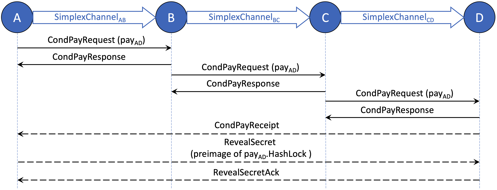
The conditional payment is established sequentially through simplex channels A–B, B–C, and C–D, following the Send Conditional Payment procedure described earlier.
After the destination D receives the CondPayRequest from C, it sends a CondPayReceipt message directly back to the source A, confirming end-to-end receipt of the conditional payment. At this point, the setup process is complete if the payment does not include a hash-lock condition.
If a hash lock condition is present, the source A must then reveal the preimage of the hash lock to D via a RevealSecret message. The end-to-end setup is finalized once A receives the corresponding RevealSecretAck from D.
Source pays in full amount on true outcome
Once the conditional payment is successfully set up, the nodes along the route cooperatively settle the payment hop by hop.
The figure below shows the message flow when the payment source initiates settlement by paying the full amount to its peer. This can occur immediately after A receives the RevealSecretAck for a payment protected by a single hash lock, or after the associated App boolean conditions are finalized (off-chain) as true.
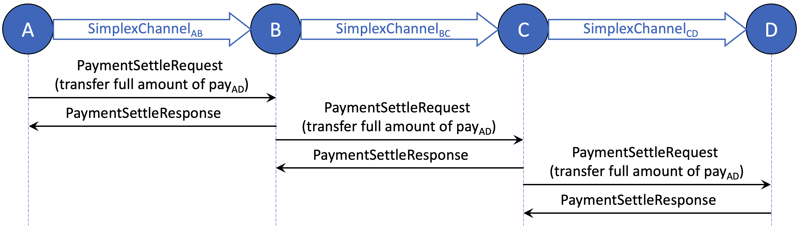
As shown above, when the condition evaluates to true, settlement begins from the payment source (A) and proceeds downstream toward the destination (D).
Each relay node (B, C) transfers the full amount to its downstream peer only after receiving the same amount from its upstream peer. This ensures that every relay can forward the payment safely without evaluating any conditions or making on-chain queries, preserving both simplicity and trustlessness.
Destination rejects the payment on false outcome
The figure below shows the message flow when the payment destination rejects the conditional payment. This occurs after the associated boolean conditions are finalized (off-chain) as false.
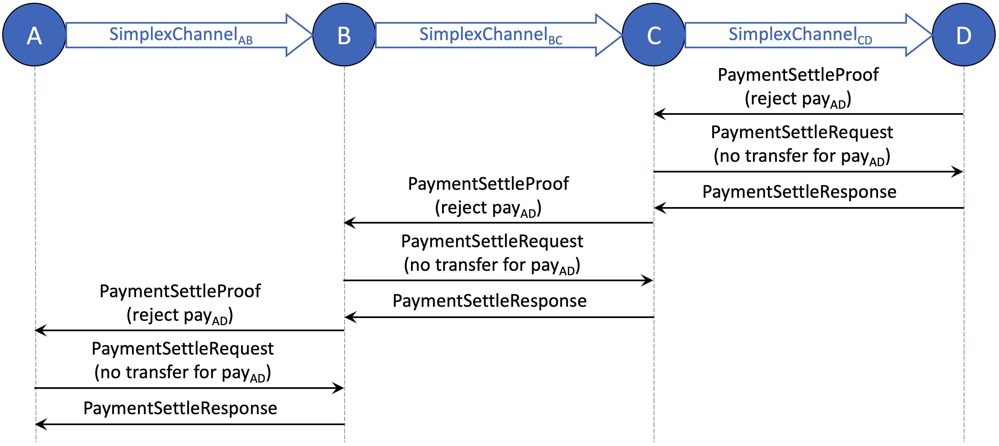
When a conditional payment should not be paid, cooperative off-chain settlement begins from the payment destination (D) and proceeds upstream toward the source (A).
Each relay node (B, C) rejects the payment from its upstream peer only after confirming that the payment has already been canceled with its downstream peer. This ensures that every relay can safely clear the payment without evaluating conditions or performing on-chain queries.
A rejection flow may also be initiated by a relay node (B or C) if it has already accepted the conditional payment from its upstream peer but fails to forward it to its downstream peer.
Settle the payment on-chain
The above sections described the cooperative end-to-end message flows for setting up and settling a conditional payment. If any node along the routing path behaves uncooperatively, an on-chain dispute can be triggered.
For payments with boolean conditions, relay nodes never need to initiate disputes, since they face no security risk while forwarding payments. Only the payment source or destination may need to dispute, depending on which side is affected by misbehavior.
The figure below illustrates a case where the payment destination (D) starts an on-chain dispute because it did not receive the full payment amount, possibly due to a failure or malicious action by an upstream node (A, B, or C).
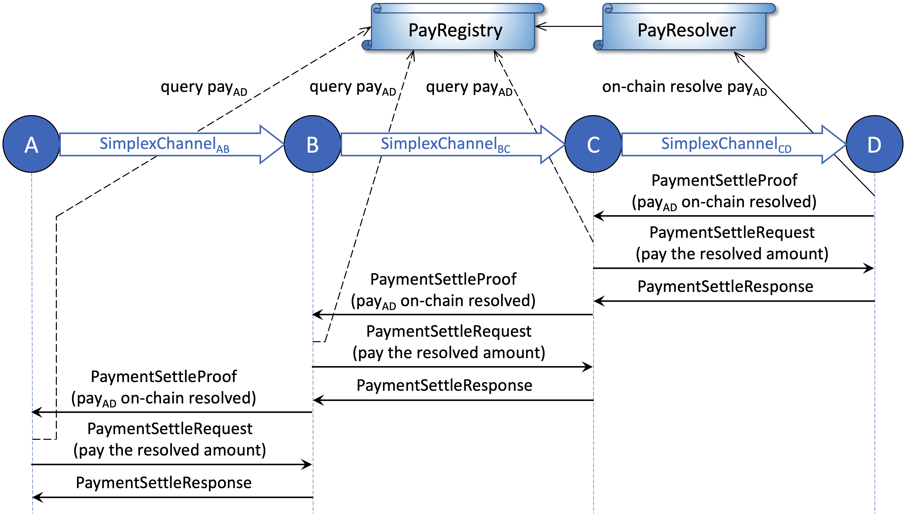
If the destination D does not receive the expected settlement, it can submit an on-chain transaction to resolve the payment by conditions. Once the payment result is finalized in the PayRegistry, D sends a PaymentSettleProof message to its upstream peer (C) to request settlement.
Upon receiving the settle proof, C verifies D’s claim by querying the PayRegistry, and then sends a PaymentSettleRequest to D to pay the resolved amount. This settle proof is then passed further upstream, with each relay repeating the same process hop by hop until reaching the source A.
If any upstream node (A, B, or C) remains uncooperative even after on-chain resolution, the downstream peer can choose to close the payment channel. Throughout the entire process, relay nodes never need to perform any payment-related on-chain transactions.
If the payment conditions resolve to false but the source A has not received a settle proof to cancel the payment, it generally does not need to dispute on-chain. The payment will automatically clear off-chain after the resolve deadline, as discussed next. If A wishes to cancel the payment earlier, it may voluntarily resolve the payment on-chain and then settle off-chain with its downstream peer. This rare case is omitted from the diagram.
Clear expired payments
Each conditional payment has a resolve deadline (field 6 of the ConditionalPay message). After this deadline, any unresolved or unsettled payment is considered expired. Once a payment expires, it can no longer be resolved on-chain — a rule enforced by the PayResolver contract. Therefore, a node can safely clear expired payments with both its upstream and downstream peers.
When receiving a settle request to clear an expired payment, a node must verify that the resolve deadline has passed and that the payment is not already finalized on-chain (by checking the PayRegistry). Each Agent Node should periodically scan its pending payments and clear expired ones to maintain clean channel states and free up locked liquidity.
Pay with Numeric Conditions
In addition to boolean conditions, AgentPay also supports numeric conditions and transfer functions as a built-in extension of the conditional payment framework. Numeric conditions allow the final payment amount to be any value between zero and the maximum amount (field 2 of the TransferFunction message), based on arbitrary application logic. This design enables a wide range of flexible off-chain applications, from data-dependent rewards to proportional settlements.
The end-to-end setup flow for payments with numeric conditions is identical to that of boolean conditions. If the payment resolves to either the full amount, zero, or becomes expired, the settlement flow also follows the same procedure described earlier. The only difference arises when the payment result is a partial value—somewhere between zero and the maximum amount. The following sections explain how AgentPay handles this case efficiently and securely.
Properties of payments with numeric conditions
Following the end-to-end design principle, the numeric conditional payment protocol maintains the same simplicity and robustness as the boolean version, while supporting more flexible outcomes. Its key properties are:
- Simple: Relay nodes remain agnostic to application and condition logic.
- Secure: Relay nodes are protected against arbitrary or malicious condition logic.
- Robust: Relay nodes only need to query a single PayRegistry view function during settlement.
- Low on-chain cost: Each payment requires at most one dispute along the entire routing path.
- Low off-chain overhead: Relay nodes never modify payment messages, and message exchanges are optimized for both cooperative and uncooperative scenarios.
Set up end-to-end numeric conditional payment
The setup process for an end-to-end multi-hop payment with numeric conditions is identical to that of boolean conditions. Each hop sequentially establishes its conditional payment using the same off-chain message flow (CondPayRequest and CondPayResponse), ensuring consistent state updates and compatibility across all channel peers.
Settle the payment hop-by-hop upstream
The figure below illustrates the cooperative settlement flow for payments with numeric conditions when all nodes behave honestly. The process begins at the payment destination (D) once the final payment result is determined to be a value between zero and the maximum amount.
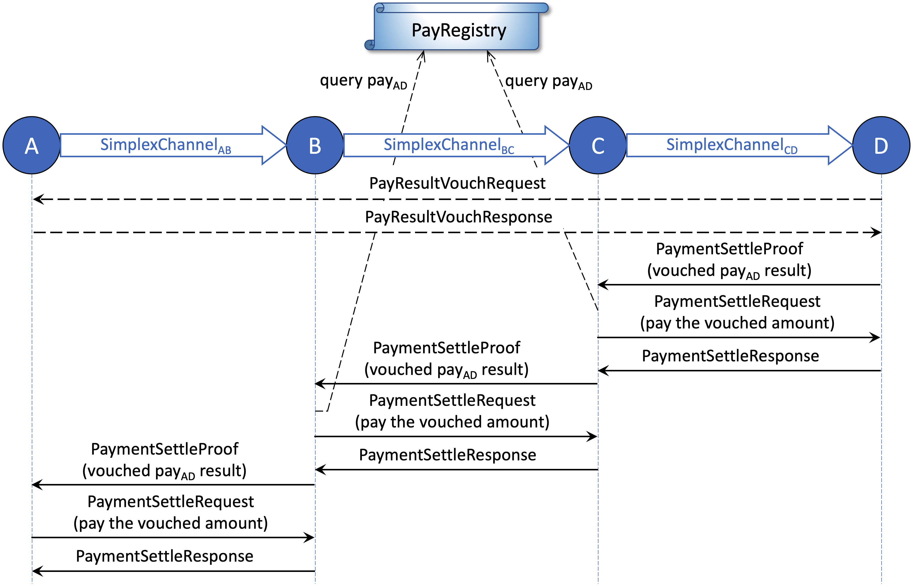
The destination D first sends a PayResultVouchRequest to the payment source A, producing a co-signed VouchedCondPayResult that confirms both parties agree on the payment outcome. Then, D sends a PaymentSettleProof message to its upstream peer C, using the vouched result as proof. C verifies that the payment is not finalized at a smaller amount by querying the PayRegistry, then pays D the vouched amount off-chain. After receiving the settlement response, C forwards the same vouched result upstream to B, which repeats the same process. Finally, A settles with B directly without querying the registry, since A is itself the payment source that signed the vouched result.
Relay nodes perform the PayRegistry check to protect themselves against potential collusion between the payment source and destination — ensuring they never pay a downstream peer more than what can be safely recovered upstream.
Dispute the payment with vouched result
After a relay node pays its downstream peer the vouched amount, it must ensure it can receive the same amount from its upstream peer. If this does not occur in time—or if the relay detects that the payment has been maliciously resolved on-chain to a smaller amount—it can initiate an on-chain dispute using the co-signed vouched result.
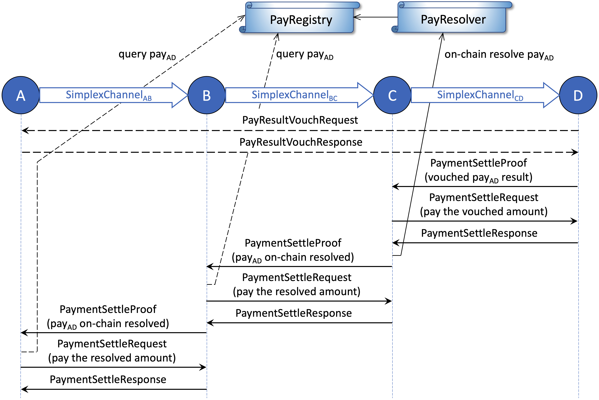
In the example shown, relay node C disputes the payment on-chain after paying D the vouched amount but failing to receive settlement from B. C submits a transaction to resolve the payment by vouched result. The PayResolver contract guarantees that the finalized result in the PayRegistry will never be smaller than the vouched amount submitted by C, ensuring that C can always recover at least what it has paid out.
Once the payment result is finalized in the registry, C sends a PaymentSettleProof message to its upstream peer to claim the resolved amount. The remaining settlement flow proceeds identically to the on-chain dispute case for payments with boolean conditions.
This protocol ensures that each relay node is guaranteed to receive from upstream an amount equal to or greater than what it has paid downstream, maintaining strong security even under partial cooperation or malicious behavior.
While security is equivalent to the boolean case, the operational cost may be higher for payments with numeric conditions. Relay nodes may need to query the PayRegistry or perform on-chain dispute transactions if peers become unresponsive, whereas in boolean-condition payments, relay nodes never need to perform any on-chain actions under any circumstance.
Summary
The AgentPay end-to-end payment protocol ensures secure and efficient multi-hop conditional payments across the network.
For payments with boolean conditions, relay nodes never need to understand application logic, query on-chain states, or submit any transactions, achieving near-zero operational and on-chain costs.
For payments with numeric conditions, relay nodes can support partial payments using vouched results, maintaining full security through verifiable proofs, though with slightly higher operational cost due to occasional on-chain queries or disputes.
Overall, the end-to-end design of AgentPay achieves its goals of simplicity, security, and scalability, enabling a robust off-chain payment network that minimizes on-chain dependency while supporting flexible application logic.
App Contracts and Protocols
As described in the previous sections, AgentPay enables high-throughput, multi-hop conditional payments where each dependency is expressed through a lightweight query interface. This framework naturally extends beyond financial transfers to power autonomous AI Agent applications that rely on programmable coordination and verifiable outcomes.
These applications may include not only oracle queries, NFT settlements, ENS ownership checks, or rollup state validations, but also arbitrary off-chain computations—such as AI model inference, data processing, or simulation tasks—that can be ZK-verified or otherwise attested on-chain. Through AgentPay’s unified conditional interface, such tasks can trigger immediate, trustless, and composable payments once their outcomes are verified.
App contracts, together with their off-chain protocols, form generalized state channels that define multi-party logic and produce outcomes consumable by AgentPay. They are modular, secure, and cost-efficient, enabling AI agents (or human participants) to interact, trade, and coordinate entirely off-chain under normal conditions. When all parties behave cooperatively, the entire lifecycle—from channel creation to final settlement—incurs zero on-chain transactions. The App contract only comes on-chain if a dispute occurs, where it provides a fully trustless and gas-efficient resolution path, ensuring autonomous and verifiable execution even in adversarial scenarios.
Required App Contract Interface
Any on-chain deployed contract or virtual contract (instantiated off-chain and deployable on demand) can serve as an App contract in the AgentPay ecosystem, as long as it exposes two standard query functions used as payment conditions: isFinalized, which checks whether the app outcome is finalized, and getOutcome, which returns its boolean or numeric result.
// Interface for app contracts with boolean outcomes
interface IBooleanOutcome {
function isFinalized(bytes calldata _query) external view returns (bool);
function getOutcome(bytes calldata _query) external view returns (bool);
}
// Interface for app contracts with numeric outcomes
interface INumericOutcome {
function isFinalized(bytes calldata _query) external view returns (bool);
function getOutcome(bytes calldata _query) external view returns (uint);
}
Each function accepts a generic bytes argument to support arbitrary query formats and logic. These are the only requirements AgentPay imposes—AgentPay does not assume or depend on how an app computes, verifies, or finalizes its state. This abstraction allows any AI-agent application, oracle, rollup, or ZK-verified computation to plug in as a payment condition seamlessly.
Byzantine application behavior: A natural concern is what happens if an app behaves unpredictably—e.g., isFinalized flips between true and false, or getOutcome yields nondeterministic results. The AgentPay protocol is designed to be Byzantine-resilient: conditional payments are cryptographically isolated from app correctness. Even if an app misbehaves, the network’s payment safety is preserved, and disputes can always be resolved trustlessly through on-chain verification.
End-to-End Integrated Workflow
Integrating an App with AgentPay is straightforward. Any App outcome—whether generated by an on-chain or off-chain virtual contract—can directly trigger an off-chain token transfer through AgentPay’s conditional payment interface.
To illustrate, consider a simple example with two participants (or AI agents) interacting in an App channel that represents a competitive or cooperative task. When the App outcome is finalized—such as determining the winner of a game, verifying a ZK-proof, or completing a joint computation—AgentPay automatically settles payments according to the predefined conditions.
For simplicity, this section uses a two-player game as the example: both players lock funds into an AgentPay channel, and conditional payments are made based on who wins. More complex cases, including multi-party collaborations, tiered numeric payouts, or probabilistic reward distributions, follow the same workflow pattern.
Play the Game with Conditional Payments to the Winner
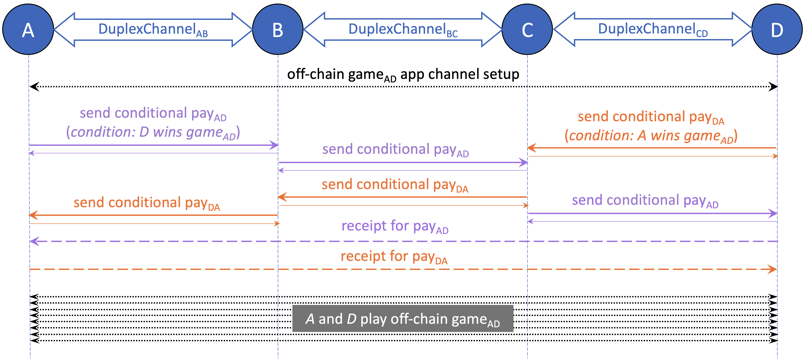
Figure above shows the message flow during the game setup and playing phase. A and D are players of an off-chain game App channel. Black lines represent messages related to game logic, while purple and orange lines represent conditional payment messages from A and D, respectively. Dashed lines indicate direct communication between A and D, without involving relay nodes.
The steps are summarized as follows:
- A and D set up the game App channel by exchanging initial parameters such as match information, prize amount, and the virtual or deployed game contract address. Neither virtual nor deployed App contract requires any on-chain initialization for the game channel.
- Each player sends a conditional payment to the opponent following the end-to-end conditional payment setup flow. The payments are symmetric: “pay the opponent the winner’s prize if the opponent wins.” The two payment routes may differ. The game begins once both conditional payments are received.
- A and D then play the game entirely off-chain by exchanging signed game states until reaching an outcome, either cooperatively or (if needed) through an on-chain settlement.
Note on state progression: The integrated workflow is agnostic to how App states evolve or settle. Any App channel logic or state progression protocol can be seamlessly supported within this framework.
Settle the Payments When the Loser Is Cooperative
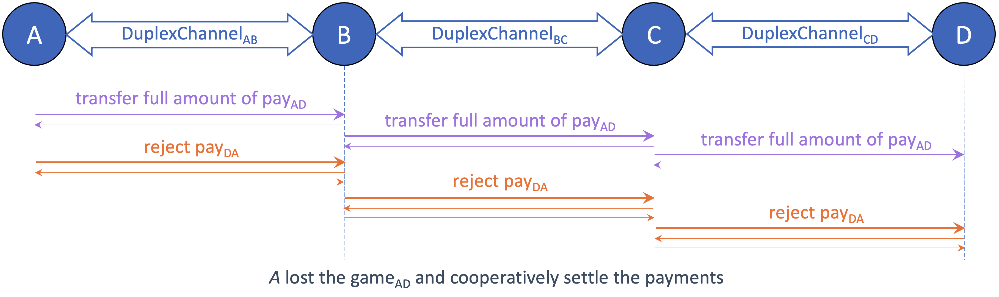
Figure above shows the message flow when A, after losing the game off-chain, follows the protocol to settle payments cooperatively. The honest loser A initiates the settlement of both conditional payments: paying the full amount for its own conditional payment to D, and rejecting the conditional payment from D. The workflow completes once the winner D confirms settlement of both payments.
There are zero on-chain transactions throughout the entire lifecycle—from when the two players agree to play the game, to the final prize distribution—so long as all participants behave cooperatively. The App contract and its logic remain purely virtual and only need to appear on-chain in the rare case of a dispute.
Settle the Payments When the Loser Is Uncooperative
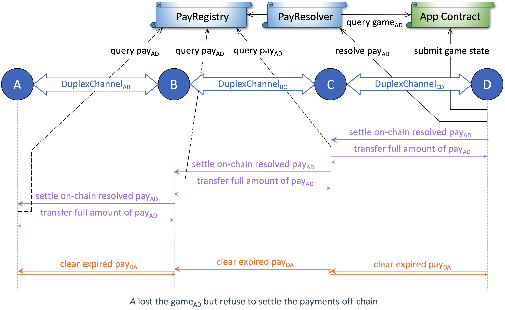
Figure above shows the message flow when A loses the game but refuses to settle the conditional payments off-chain. To claim the prize, the winner D initiates a dispute, resolves the payment on-chain, and completes settlement with its upstream peer. Relay nodes (B and C) never need to perform any on-chain transactions, even when the end players (A and D) fail to cooperate.
The workflow proceeds as follows:
- The winner D initiates an on-chain dispute by submitting the latest off-chain game state to the on-chain App contract.
- If the game was based on a virtual App contract, D first deploys it through the VirtContractResolver.
- If the submitted state is not final, D may continue on-chain gameplay until the outcome becomes finalized.
- Once the outcome is finalized, D resolves the conditional payment on-chain. The PayResolver queries the outcome from the App contract and records the result into the PayRegistry.
- D and all relay nodes then settle the on-chain resolved payment with their respective upstream peers. If any peer remains uncooperative, the downstream node can close the payment channel on-chain to finalize settlement.
- The conditional payment from the winner D to the loser A is canceled. If A fails to reject the payment, all peers simply wait until it expires and then clear it. D may also resolve it on-chain earlier to accelerate cleanup.
This end-to-end workflow highlights two key architectural advantages of the decoupled App and payment channels:
- App flexibility: Players (A and D) can use any App channel framework—off-chain, on-chain, or hybrid—while still linking its outcome to token transfers seamlessly.
- Relay simplicity: Relay nodes (B and C) only forward payment messages and never interact with the App logic or perform on-chain actions, enabling a highly scalable and low-overhead network.
Summary
The App Contracts and Protocols layer provides the foundation for generalized, trustless off-chain computation and interaction in the AgentPay network.
By decoupling App logic from payment settlement, the architecture allows any task—ranging from simple Boolean decisions to complex, multi-party computations verified by zero-knowledge proofs—to directly trigger token transfers without requiring custom payment code or on-chain dependency during normal operation.
In fully cooperative cases, the entire lifecycle of an App—initialization, interaction, and settlement—occurs completely off-chain with zero gas cost. When disputes arise, the same App logic can be selectively materialized on-chain to produce verifiable outcomes, ensuring security and fairness without compromising scalability.
This design makes AgentPay not just a payment network, but a universal coordination fabric for AI agents and smart applications—capable of autonomously transacting, reasoning, and resolving outcomes across both virtual and on-chain environments.
Off-Chain Availability Problem
Off-chain systems like AgentPay achieve scalability and low cost by moving most interactions away from the blockchain. The tradeoff is that participants — whether human users or autonomous AI agents — must keep their latest off-chain states available and be able to respond if a counterparty initiates an on-chain dispute.
In the early era of user-operated state channels, this “always-online” requirement was a major usability barrier. In the AI Agent world, the issue is less frequent since agents typically operate on persistent infrastructure, but the risk remains non-negligible. A node crash, a configuration bug, or a service outage during a dispute window could still result in permanent fund loss or incorrect settlement.
While dispute windows are designed to be long enough to tolerate temporary downtime or network interruptions, they cannot prevent problems caused by prolonged unavailability — for example, when an agent is offline for days, loses access to its stored state proofs, or fails to monitor on-chain events.
If such a failure occurs, the blockchain will finalize the most recently submitted state, even if it is outdated or maliciously chosen by the counterparty. This can lead to irreversible outcomes such as lost funds or invalid app states. The burden of maintaining continuous online availability thus fundamentally contradicts the goal of a fully autonomous and fault-tolerant agent system.
To eliminate this dependence, AgentPay introduces the State Guardian Network (SGN) — a decentralized network of bonded validators that provides state availability and protection as a service. SGN securely stores cryptographic commitments of off-chain states and automatically acts on-chain during disputes or expirations, ensuring correct outcomes even when participants are offline. With SGN, the liveness and reliability of AgentPay channels and App sessions no longer rely on user or agent uptime, but on the economic security of a decentralized validator network.
Evolution of SGN
The Celer State Guardian Network (SGN) was originally conceived as a decentralized “watchtower” to safeguard off-chain state channels — maintaining state availability for users who might go offline and automatically responding to on-chain disputes when needed.
Since its inception, SGN has evolved far beyond its initial scope. Today, it serves as the validator backbone of the Celer Network, powering both Celer cBridge and Celer Inter-Chain Message (CelerIM) systems. These platforms collectively handle tens of billions of dollars in cross-chain transaction volume and millions of inter-chain messages across dozens of blockchains.
Backed by a bonded validator set with on-chain staking, consensus, and slashing, SGN has operated in production for years with zero security incidents, establishing a proven record of reliability, scalability, and economic soundness.
SGN’s architecture is inherently parallel and shared-nothing. Each service type operates independently. Requests within the same service can execute fully in parallel, since they never compete for shared global resources or double-spend risk. This design allows SGN to scale horizontally by deploying multiple parallel chains — all governed by the same validator set, staking logic, and slashing conditions anchored on Ethereum. Validators maintain unified security guarantees across all service chains while executing different workloads independently and efficiently.
This combination of decentralized security and massive parallel scalability makes SGN a natural fit to reintroduce its original purpose: serving once again as a Channel Guardian for the AgentPay ecosystem. The same validator set and staking base that now secures large-scale inter-chain operations can operate additional guardian service chains, monitoring off-chain AgentPay and App states, storing cryptographic commitments, and performing dispute actions when necessary — all without impacting other SGN workloads.
In essence, SGN’s evolution represents a full circle:
- It began as a conceptual guardian for off-chain states.
- It matured into a proven, large-scale production network securing real-world assets.
- It now returns to its foundational vision — protecting AgentPay’s off-chain world with the same proven security model that already safeguards billions in on-chain value
SGN as Channel Guardian
The Channel Guardian service is the original fundamental mission of the State Guardian Network (SGN). It eliminates the off-chain availability risks of AgentPay channels by allowing an Agent (or user) to safely go offline after securely registering its latest off-chain state with SGN.
Once registered, SGN validators collectively store cryptographic commitments of that state and continuously monitor the blockchain for dispute or settlement attempts involving the guarded channel. If a malicious or outdated state is submitted on-chain, SGN automatically responds with the correct one on behalf of the offline Agent, ensuring full fund safety without requiring user uptime.
Service Flow
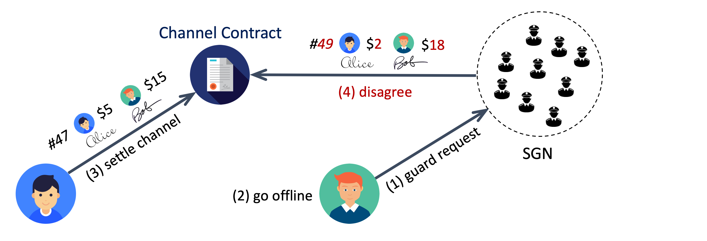
Figure above illustrates the basic Channel Guardian service flow. The numbers in parentheses indicate the sequence of events:
- The Agent submits a
guardRequestto SGN, containing its latest signed state commitment. - The Agent can then safely go offline — the state is now cryptographically protected by SGN.
- If the channel peer later tries to settle the channel on-chain with an older state, SGN validators detect the
IntendSettleevent. - Validators compare the attempted state’s sequence number with the guarded one and automatically respond on-chain if the guarded version is newer.
The guarded state can also be retrieved through the SGN’s off-chain getChannelState API whenever the Agent reconnects.
SGN offers two service modes, giving Agents flexibility between speed and privacy.
Fast Mode
In Fast Mode, the guard request includes the latest co-signed state proof. When a settlement attempt is detected, the assigned SGN guardian simply submits the intendSettle transaction with this guarded state proof. After the settlement process completes, the channel can be finalized by any participant via the standard confirmSettle transaction.
This mode provides the lowest latency and simplest workflow, suitable for most use cases where privacy is not a primary concern. Although validators see sequence numbers and aggregate balance proofs, they cannot infer detailed payment routes or conditions. Off-chain transactions under Fast Mode already provide better privacy than on-chain transfers.
Private Mode
For users requiring stronger privacy guarantees, Private Mode limits what information is revealed to SGN. Instead of sending the full state proof, the Agent provides only the minimal tuple:
cps = <channel_id, peer_from, seq_num, signatures>
This allows SGN to protect the channel by issuing a vetoSettle transaction against any outdated settlement attempt without seeing detailed balances or payment metadata.
Optionally, the Agent may also include an encrypted full co-signed state proof purely for backup — ensuring recoverability without exposing data.
To maintain consistency and prevent abuse, the peers must follow a safe off-chain message order when exchanging and signing cps data:
- A sends B the new simplex state signed by A.
- B replies with its signature for both the full simplex state and the separate
cpsdata. - A then signs B’s
cps, completing the handshake.
This ensures no peer can block the channel closure by indefinitely vetoing settlements.
Guardian Assignment and Incentives
SGN validators collectively serve as decentralized channel guardians, providing continuous on-chain monitoring and timely response services that protect AgentPay channels during dispute windows. Each validator independently tracks on-chain events and collectively reaches consensus within SGN when a guarded channel requires action.
Assignment Model
For every guarded channel, SGN selects a subset of validators as active guardians, with the remainder serving as standby guardians. When a settlement attempt is detected on a guarded channel:
- Validators independently verify the event and may broadcast a valid guard transaction after a short randomized delay determined by their assignment order.
- The first valid on-chain transaction finalizes the protection, preventing outdated or malicious channel states from being confirmed.
- All validators observe and agree on the event within SGN through the same event-sync and consensus mechanism already used for cross-chain message verification in cBridge and CelerIM.
This model enables fast, decentralized, and reliable protection without redundant transactions or coordination overhead.
Economic Incentives
Each AgentPay channel can register a guard service fee, which may be structured as either a per-request fee or a recurring subscription fee.
This fee is divided into two parts:
- Active Guard Reward: Granted to the validator that first submits a valid on-chain guard transaction when a dispute occurs.
- Baseline Staking Reward: Periodically distributed to all SGN validators, weighted by staking power, for maintaining continuous monitoring availability.
If no on-chain settlement is ever triggered—which is the expected case under normal cooperative operation—the validator network still receives the baseline staking reward from accumulated subscription fees, reflecting its ongoing availability and coverage commitment.
This model ensures that validators are rewarded both for readiness and for action, sustaining long-term participation while keeping user costs predictable and minimal.
Accountability and Reputation
Each validator maintains a guardian reliability score based on measurable performance metrics, including uptime, event monitoring responsiveness, and historical success in submitting valid guard transactions.
Validators with higher scores gain higher assignment priority for future guard requests and receive proportionally greater reward shares from the baseline staking distribution. Occasional missed events only affect reputation and future assignment weighting—without risking stake slashing—whereas deliberate protocol violations, such as falsifying SGN consensus or submitting invalid guard proofs, remain subject to on-chain penalties.
This model ensures trust-any safety for users while preserving a validator-friendly and sustainable operating environment that rewards consistent service quality over time.
Security Model
SGN provides trust-minimized availability assurance for AgentPay channels through a hybrid of BFT consensus and open validator participation.
When an agent submits a guard request, it is confirmed through SGN’s on-chain-staked validator consensus—ensuring that the request is durably recorded and cryptographically verifiable. Once accepted, any single honest validator among the active set is sufficient to guarantee successful protection of the guarded channel, since one valid on-chain guard transaction fully prevents malicious settlements.
Security and reliability rest on three pillars:
- Consensus integrity: Guard requests are finalized only after confirmation by >2/3 validator voting power, making them tamper-proof within SGN’s consensus layer.
- Liveness assurance: Because multiple validators independently monitor on-chain events, the system remains live and responsive as long as at least one assigned or standby guardian acts correctly within the dispute window.
- Economic alignment: The reward and reputation mechanisms align validator incentives with both correctness and responsiveness—ensuring that protecting user channels is always economically rational.
This architecture combines BFT-grade consistency with trust-any liveness, delivering strong availability guarantees and verifiable accountability while avoiding harsh slashing for honest mistakes.
Scalability
SGN scales horizontally by running multiple parallel chains under the same validator set and staking logic. Each chain provides an independent service—such as channel state guarding, or inter-chain bridging—and can process requests in parallel without shared global state or double-spend risks.
Even the channel guardian service can be sharded into many parallel sub-chains, each responsible for a subset of channels, enabling protection for millions of active AgentPay channels while maintaining the same decentralized security guarantees. All chains follow the same validator staking and slashing rules, ensuring consistent security and economic alignment across the entire SGN ecosystem.
Integration with AgentPay and App Channels
By serving as a decentralized availability layer, SGN completes the trustless lifecycle of AgentPay and App channels. AI Agents and human users alike can now participate in off-chain interactions — payments, cooperative apps, or verifiable computations — without maintaining continuous online presence or centralized custody. Once an Agent registers its guarded state, SGN validators act as always-on watchers, ensuring that no outdated or malicious state can ever be finalized on-chain.
This architecture removes the last operational weakness of state channels — availability dependence — and extends the proven, production-grade SGN validator infrastructure (already securing billions in cross-chain value) to also protect off-chain economic activity and autonomous agent execution.
With this integration, AgentPay becomes a fully self-securing, always-protected off-chain network, enabling a new generation of scalable, autonomous, and verifiable AI-driven interactions.